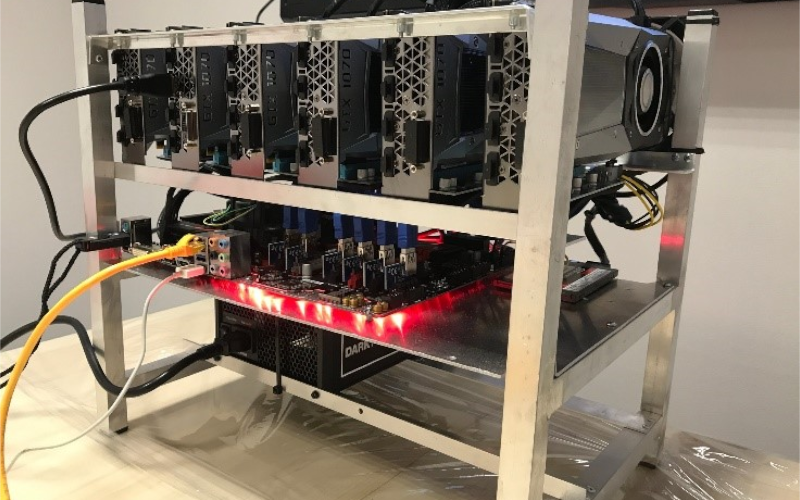

W inwestowaniu, to co jest wygodne rzadko jest opłacalne
Koparki kryptowalut
W sieci bitcoina (i zresztą nie tylko) najważniejsi są górnicy, odpowiadający za zatwierdzanie transakcji i tworzenie nowych bloków transakcyjnych, korzystający ze wspomnianych wcześniej komputerów nazywanych koparkami. Tak jak mówiłem w odcinku drugim o sieci blockchain - hash jest bardzo trudny do odnalezienia, ale gdy już zostanie odnaleziony, to weryfikacja jego poprawności jest bardzo prosta, dzięki czemu węzły mogą natychmiastowo potwierdzić czy wykopany blok jest poprawny.

Oczywiście, to nie jest tak że dzisiaj każdy może kopać bitcoiny. Tzn. każdy może to robić, ale żeby to było w jakikolwiek sposób opłacalne, trzeba mieć do tego odpowiedni sprzęt.W pierwszych latach działania sieci BTC, kopanie było opłacalne nawet przy wykorzystaniu laptopów i zwykłych komputerów stacjonarnych, później jednak dało się cokolwiek wykopać już przy użyciu kart graficznych wyższej klasy, a niedługo potem zaczęto budować całe koparki składające się z kilku kart graficznych.
W pierwszych latach działania sieci BTC, kopanie było opłacalne nawet przy wykorzystaniu laptopów i zwykłych komputerów stacjonarnych, później jednak dało się cokolwiek wykopać już przy użyciu kart graficznych wyższej klasy, a niedługo potem zaczęto budować całe koparki składające się z kilku kart graficznych. Obecnie do kopania BTC nadają się wyłącznie wyspecjalizowane koparki oparte na układach ASIC, służące wyłącznie do rozwiązywania konkretnej funkcji hashującej (w przypadku BTC jest to popularny SHA256, wykorzystywany np w certyfikatach bezpieczeństwa witryn internetowych). Taka koparka nie nadaje się do niczego innego, jest za to bardzo wydajna.
Co więcej, dziś już żaden pojedynczy górnik nie ma szans na wykopanie bloku z użyciem jednej koparki, może za to udostępniać swoją moc obliczeniową i partycypować w zyskach. Dlaczego tak się dzieje, że dziś naszym domowym komputerem nic nie wykopiemy? W sieci bitcoina bardzo ważny jest parametr trudności wydobycia - działa on tak, że im większa moc obliczeniowa od górników w sieci, tym trudniej jest wykopać nowy blok transakcyjny. Zmienia się on w BTC co 2016 bloków, czyli co ok. dwa tygodnie i jego działanie zmierza do tego, aby każdy blok transakcyjny był dodawany do łańcucha co 10 minut. Czyli, jeżeli moc obliczeniowa w sieci wzrasta i górnicy są w stanie wykopywać nowe bloki szybciej niż co 10 minut, to przy kolejnej rekalkulacji trudności wydobycia kopanie będzie trudniejsze, tak aby średni czas znów zbliżył się do 10 minut. I odwrotnie.
Giełdy kryptowalut
Giełdy kryptowalutowe to swego rodzaju pośrednik w technologi jaką jest blockchain. Umożliwia ona łatwą, bezpieczną i prostą wymianę posiadanych przez użytkownika tokenów. Nie działają one fizycznie, a jedynie cyfrowo. Całość transakcji odbywa się w sieci.
Giełdy kryptowalutowe umożliwiają sprzedaż tokenów, a samo działanie podobne jest do działania giełdy papierów wartościowych. Istnieje możliwość sprzedaży, lub wymiany konkretnej kryptowaluty na inną kryptowalutę. Przykładowo: można sprzedać i kupić Bitcoiny za PLN, a także dokonać transakcji za inną kryptowalutę. Giełdy zależnie od swojej wielkości posiadają w bazie pewną ilość coinów. Na rynku występują giełdy posiadające kilka kryptowalut, ale także takie mające w swojej bazie nawet kilkadziesiąt różnych tokenów.
Kurs ustalany jest przez giełdy zależnie od stanu wydobycia, ale także działań sprzedaży i kupna przez użytkowników. Umożliwiają one użytkownikowi obserwację ilości ofert kupna i sprzedaży. Wiele giełd oferuje platformy edukacyjne i poradniki, dzięki którym zarówno doświadczeni jak i początkujący traderzy są w stanie odnaleźć się w środowisku kryptowalut.
Ingerencje rządu w kryptowaluty
Historia opodatkowania kryptowalut w Polsce sięga roku 2013. Wtedy to na wirtualne pieniądze został nałożony podatek VAT, natomiast podatek PIT był naliczany według skali podatkowej. Problemem jest to, że uzyskanie faktury, a co za tym idzie możliwości odliczenia podatku na miejscu na giełdzie kryptowalut było i nadal jest tak naprawdę niemożliwe. Oznaczało to że osoba chcąca sprzedać kryptowaluty musiała zapłacić podatek VAT, natomiast przy zakupie nie była w stanie tego podatku odliczyć. Sytuacja ta zmieniła się dopiero po orzeczeniu trybunału sprawiedliwości unii europejskiej. Orzekł on że kryptowaluty nie powinny być obłożone podatkiem VAT.
Dodatkowo do Lipca 2018 od kryptowalut powinno się płacić podatek PCC. Oznacza to, że od każdej transakcji należało zapłacić dwa procent podatku. Była to oczywiście sytuacja absurdalna, ponieważ same giełdy niekiedy muszą rozbijać transakcję na kilka mniejszych aby zmieściły się one w jednym bloku. Ogólnie mówiąc osoby które do połowy roku 2018 handlowały kryptowalutami w świetle prawa muszą zapłacić horrendalnie wysoki podatek.
Aktualnie w Polsce na kryptowaluty nałożony jest jedynie podatek dochodowy.